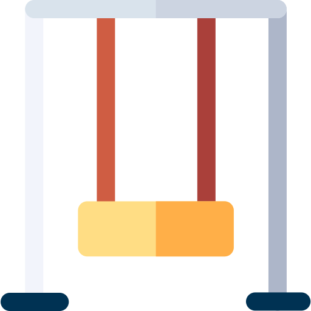
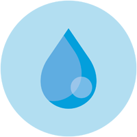
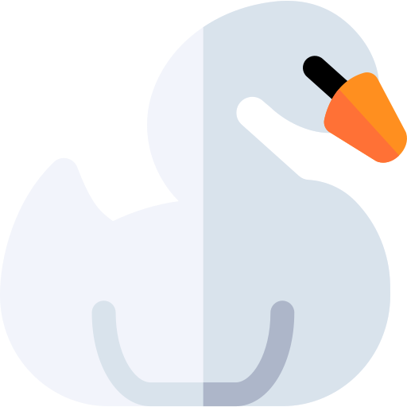

Região
Norte
Infraestrutura
 Quadras poliesportivas
Quadras poliesportivas
 Ciclovia
Ciclovia
 Campos de Terra
Campos de Terra
Paraciclos
 Quiosques
Quiosques
 Aparelhos de alongamento
Aparelhos de alongamento
 Churrasqueiras
Churrasqueiras
 Anfiteatro
Anfiteatro
 Playground
 Espelhos d'água
Pista de caminhada
 Sanitários e entrada para pessoas com deficiência
Sanitários e entrada para pessoas com deficiência
Estacionamento gratuito
 Orquidário
Orquidário
Bosque de Leitura
 Conservação de Animais Silvestres
Localização e Contato
 Av. Fortunata Tadiello Natucci, 1000 - Perus
Av. Fortunata Tadiello Natucci, 1000 - Perus
(11) 3917-2406
Horário de Abertura
06:00 ás 18:00
Área
9.500.000 m²
Como Chegar
Ônibus
8055/51 - Perus / Metrô Barra Funda
8014/10 - Morro Doce / Perus
8055/10 - Perus / Lapa
Anhanguera

Sobre o Parque
O Parque Anhanguera é o maior parque municipal de São Paulo, com área total de 9.500.000 m²; destes, 400.000 m² destinam-se a visitação e o restante é restrito para a preservação do ecossistema e diversidade biológica. Está em zona de amortecimento e conectividade entre o Parque Estadual do Jaraguá e o Parque Estadual da Cantareira, pois tem grande importância como Corredor Ecológico e troca de fluxo gênico, permitindo a ligação e manutenção de espécies de fauna e flora dessas regiões.
Fauna


Flora